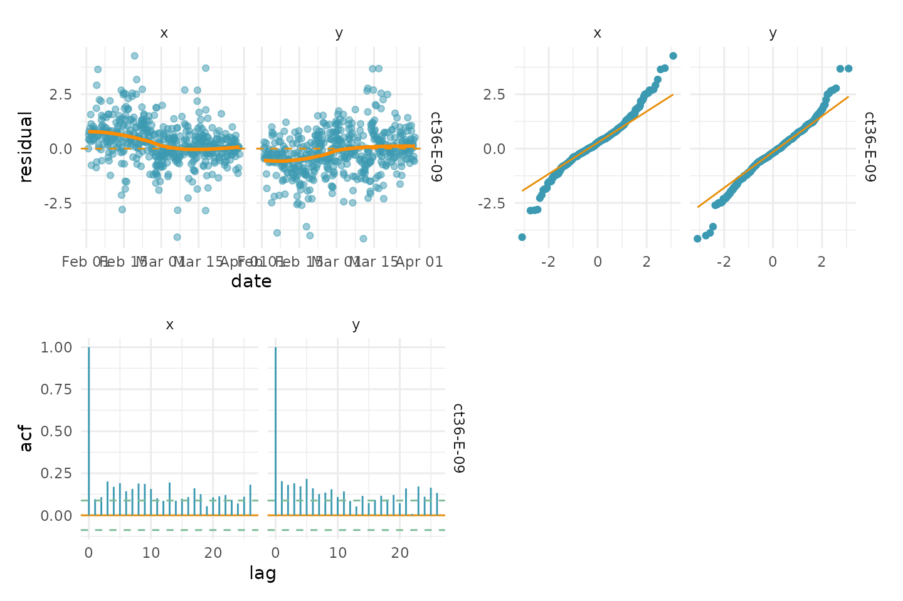

Disclaimer
this vignette is an extended set of examples to highlight foieGras’s functionality. Please, do NOT interpret these examples as instructions for conducting analysis of animal movement data. Numerous essential steps in a proper analysis have been left out of this document. It is your job to understand your data, ensure you are asking the right questions of your data, and that the analyses you undertake appropriately reflect those questions. We can not do this for you!
foieGras models
this vignette provides a (very) brief overview of how to use foieGras to filter animal track locations obtained via the Argos satellite system or via processed light-level geolocation (GLS). foieGras provides two state-space models (SSM’s) for filtering (ie. estimating “true” locations and associated movement model parameters, while accounting for error-prone observations):
- a simple Random Walk model,
rw - a Correlated Random Walk model,
crw
both models are continuous-time models, that is, they account for the time intervals between successive observations, thereby naturally accounting for the commonly irregularly-timed nature of animal tracking data. We won’t dwell on the details of the models here (see Jonsen et al. 2020 for details on the crw model), except to say there may be advantages to choosing one over the other in certain circumstances. The Random Walk model tends not to deal well with small to moderate gaps (relative to a specified time step) in observed locations and can over-fit to particularly noisy data. The Correlated Random Walk model can often deal better with these small to moderate data gaps and appropriately smooth through noisy data but tends to estimate nonsensical movement through larger data gaps.
additionally, foieGras provides fast models (mpm, jmpm) for estimating a behavioural index along animals’ tracks (see Jonsen et al. 2019 for details). The mpm is fit to individual tracks, whereas the jmpm is fit to multiple tracks simultaneously with a variance parameter that is estimated jointly across the tracks. This latter model can often better resolve subtle changes in movement behaviour along tracks that lack much contrast in movements. Now, both models can be fit to time-regularized locations (discrete-time models) or to time-irregular locations (continuous-time models). See Auger-Méthé et al. 2017 for an example of the latter.
input data
foieGras expects data to be provided in one of several possible formats.
- a
data.frameortibblethat looks like this
#> id date lc lon lat smaj smin eor
#> 1 54591 2012-03-05 05:09:33 1 110.5707 -66.42752 2442 416 42
#> 2 54591 2012-03-06 04:55:14 0 110.3402 -66.39579 49660 391 90
#> 3 54591 2012-03-07 04:23:10 A 110.4778 -66.45266 5032 472 93
#> 4 54591 2012-03-07 21:23:06 A 110.3749 -66.39622 4007 286 116
#> 5 54591 2012-03-09 04:27:49 B 110.4732 -66.48743 13063 956 82
#> 6 54591 2012-03-10 00:10:41 A 110.5014 -66.43516 5099 478 79where the Argos data are provided via CLS Argos’ Kalman filter model (KF) and include error ellipse information for each observed location.
- a
data.frameortibblethat looks like this
#> id date lc lon lat
#> 1 ct109-085-14 2015-02-03 00:11:02 B 70.45 -49.93
#> 2 ct109-085-14 2015-02-03 13:26:37 B 71.00 -50.21
#> 3 ct109-085-14 2015-02-03 21:53:15 B 71.31 -50.37
#> 4 ct109-085-14 2015-02-04 04:05:35 A 71.64 -50.43
#> 5 ct109-085-14 2015-02-04 17:12:42 B 72.04 -50.46
#> 6 ct109-085-14 2015-02-05 02:05:44 B 72.44 -50.47where the Argos data are provided via CLS Argos’ Least-Squares model (LS) and do not include error ellipse information.
- a
data.frameortibblethat includes observations with missing KF error ellipse information
#> id date lc lon lat smaj smin eor
#> 1 54591 2012-03-05 05:09:33 1 110.5707 -66.42752 2442 416 42
#> 2 54591 2012-03-06 04:55:14 0 110.3402 -66.39579 49660 391 90
#> 3 54591 2012-03-07 04:23:10 A 110.4778 -66.45266 NA NA NA
#> 4 54591 2012-03-07 21:23:06 A 110.3749 -66.39622 NA NA NA
#> 5 54591 2012-03-09 04:27:49 B 110.4732 -66.48743 NA NA NA
#> 6 54591 2012-03-10 00:10:41 A 110.5014 -66.43516 5099 478 79in this situation, foieGras treats observations with missing error ellipse information as though they are LS-based observations.
- an
sf-tibblewhere observations have any of the previous 3 structures and also includeCRSinformation
#> id date lc smaj smin eor geometry
#> 1 54591 2012-03-05 05:09:33 1 2442 416 42 POINT (2430.943 -912.3109)
#> 2 54591 2012-03-06 04:55:14 0 49660 391 90 POINT (2437.96 -903.7763)
#> 3 54591 2012-03-07 04:23:10 A 5032 472 93 POINT (2429.753 -907.3739)
#> 4 54591 2012-03-07 21:23:06 A 4007 286 116 POINT (2437.367 -905.2335)
#> 5 54591 2012-03-09 04:27:49 B 13063 956 82 POINT (2426.138 -905.8045)
#> 6 54591 2012-03-10 00:10:41 A 5099 478 79 POINT (2431.234 -909.0692)- a
data.frame,tibbleorsf-tibblewhere processed GLS data are provided and include longitude and latitude error SD’s (in degrees). In this case, thelcclass is set toGLfor all GLS locations.
#> id date lc lon lat lonerr laterr
#> 1 54632 2021-12-01 15:16:59 GL 100.0 -55 0.5522867 0.2222715
#> 2 54632 2021-12-02 03:16:59 GL 100.5 -54 0.0296093 1.9210970
#> 3 54632 2021-12-02 15:16:59 GL 101.0 -53 0.5951895 0.2829310
#> 4 54632 2021-12-03 03:16:59 GL 101.5 -52 0.1338235 1.1228915
#> 5 54632 2021-12-03 15:16:59 GL 102.0 -51 0.8042994 1.1010995- a
data.frame,tibbleorsf-tibblewhere GPS data are provided. In this case, thelcclass is set toGfor all GPS locations.
#> id date lc lon lat
#> 1 F02-B-17 2021-12-01 15:16:59 G 70.1 -49.2
#> 2 F02-B-17 2021-12-01 16:16:59 G 70.6 -48.2
#> 3 F02-B-17 2021-12-01 17:16:59 G 71.1 -47.2
#> 4 F02-B-17 2021-12-01 18:16:59 G 71.6 -46.2
#> 5 F02-B-17 2021-12-01 19:16:59 G 72.1 -45.2- a
data.frame,tibbleorsf-tibblewhere any combination of Argos, GLS or GPS locations can be intermixed - though, most typically this would be a combination of Argos and GPS locations.
#> id date lc lon lat smaj smin eor
#> 1 F02-B-17 2017-09-17 05:20:00 G 70.1 -49.2 NA NA NA
#> 2 F02-B-17 2017-10-04 14:35:01 2 70.2 -49.1 1890 45 77
#> 3 F02-B-17 2017-10-05 04:03:25 G 70.1 -49.3 NA NA NA
#> 4 F02-B-17 2017-10-05 06:28:20 A 71.1 -48.7 28532 1723 101
#> 5 F02-B-17 2017-10-05 10:21:18 B 70.8 -48.5 45546 3303 97fitting a foieGras model
model fitting for quality control of locations is comprised of 2 steps: a prefilter step where a number of checks are made on the input data (see ?foieGras::fit_ssm for details), including applying the trip::sda filter to identify extreme outlier observations. Additionally, if the input data are not supplied as an sf object,the prefilter guesses at an appropriate projection (typically world mercator, EPSG 3395) to apply to the data. The SSM is then fit to this projected version of the data. Users invoke this process via the fit_ssm function:
## prefilter and fit Random Walk SSM using a 24 h time step
fit <-
fit_ssm(
sese1,
model = "rw",
time.step = 24,
control = ssm_control(verbose = 0)
)these are the minimum arguments required: the input data, the model (rw or crw) and the time.step (in h) to which locations are predicted (the argument control = ssm_control(verbose = 0) is included for vignette tidyness). Additional control can be exerted over the prefiltering step, via the vmax, ang, distlim, spdf and min.dt arguments. see ?fit_ssm for details, the defaults for these arguments are quite conservative (for non-flying species), usually leading to relative few observations being flagged to be ignored by the SSM. Additional control over the SSM fitting step can also be exerted via the control = ssm_control() argument, see ?ssm_control for details.
fit_ssm can be applied to single tracks or to multiple tracks, as shown above. The SSM is fit to each individual separately and the resulting output is a compound tibble with rows corresponding to each individual fG_ssm fit object. The converged column indicates whether each model fit converged successfully.
## list fit outcomes for both seals
fit
#> # A tibble: 1 × 5
#> id ssm converged pdHess pmodel
#> <chr> <named list> <lgl> <lgl> <chr>
#> 1 ct36-E-09 <ssm [15]> TRUE TRUE rwindividual id is displayed in the 1st column, all fit output (ssm) in the 2nd column, convergence status (whether the optimizer found a global minimum) of each model fit is displayed in the 3rd column, whether the Hessian matrix was positive-definite and could be solved to obtain standard errors (pdHess) is displayed in the 4th column, and the specified process model (rw or crw) in the 5th column. In some cases, the optimizer will converge but the Hessian matrix is not positive-definite, which typically indicates the optimizer converged on a local minimum. In this case, some standard errors can often be calculated but not all. One possible solution is to try specifying a longer time.step or set time.step = NA to turn off predictions and return only fitted values (location estimates at the pre-filtered observation times). If pdHess = FALSE persists then careful inspection of the supplied data is warranted to determine if suspect observations not identified by prefilter are present. The excellent glmmTMB troubleshooting vignette may also provide hints at solutions. Convergence failures should be examined for potential data issues, however, in some cases changes to the optimization parameters via ssm_control() (see ?fit_ssm and ?ssm_control on usage) may overcome mild issues (see ?nlminb or ?optim for details on optimization control parameters).
accessing and visualizing model fit objects
simple summary information about the fit can be obtained by calling the individual fit objects:
fit$ssm[[1]]
#> Process model: rw
#> Time interval: 24 hours
#> number of original observations: 678
#> number of observations: 497
#> number of fitted states: 497
#> number of predicted states: 58
#>
#> parameter estimates
#> -------------------
#> Estimate Std. Error
#> rho_p -0.57318 0.05055
#> sigma_x 9.12395 0.43809
#> sigma_y 7.41921 0.32841
#> rho_o 0.45149 0.08719
#> tau_x 0.35098 0.02742
#> tau_y 0.32356 0.02235
#> -------------------
#> negative log-likelihood: 4410.053
#> convergence: yeshere, the [[1]] denotes the first individual and so on. The summary table lists all estimated parameters, the specific ones listed depend on the process model selected and the data type. Here, sigma_x and sigma_y are the process error standard deviations in the x and y directions, rho_p is the correlation parameter in the covariance term, tau_x and tau_y are the observation error standard deviations, and rho_o is the correlation parameter. The Std. Error column lists the standard errors, calculated via the Delta method (see TMB documentation for details), for each estimated parameter.
a summary plot method allows a quick visual of the SSM fit to the data:
# plot time-series of the predicted values
plot(fit, what = "predicted", type = 1, pages = 1)
plot(fit, what = "fitted", type = 2, pages = 1)
the predicted values (red) are the state estimates predicted at regular time intervals, specified by time.step (here every 24 h). These estimates are plotted on top of the observations that passed the prefilter stage (blue points and blue rug at bottom). Fitted values are the state estimates corresponding to the time of each observation; their time series are plotted by default - plot(fit). A 2-D time series plot of the track is invoked by the argument type = 2.
Assessing goodness-of-fit is an important component of any model fitting exercise. Residual plots are important for validating models, but classical Pearson residuals, for example, are not appropriate for state-space models. Instead, a prediction residual, or one-step-ahead residual, provides a useful alternative - albeit more computationally demanding to calculate. In foieGras, prediction residuals from state-space model fits are calculated using the osar function and can be visualised as time-series plots, Q-Q plots, or autocorrelation functions:
require(patchwork)
# calculate & plot residuals
res <- osar(fit)
(plot(res, type = "ts") | plot(res, type = "qq")) /
(plot(res, type = "acf") | plot_spacer())
As calculation of these residuals is computationally demanding, especially for multiple individual tracks, the osar function is automatically implemented in parallel when calculating residuals for more than 2 tracks.
inferring behaviour
A behavioural index, movement persistence, can be estimated along SSM-fitted tracks by using the fit_mpm function. This index ranges continuously from 0, associated with frequent changes in direction and/or speed, to 1, associated with infrequent changes (persistence) in direction and/or speed. Here we use the fG_ssm fit object from earlier as data to estimate and visualise the time-varying movement persistence as a 1-D time-series and along an animal’s ssm-filtered track:
fmp <- fit_mpm(fit, what = "predicted", model = "mpm", control = mpm_control(verbose = 0))
plot(fmp, pages = 1, pal = "Zissou1", rev = TRUE)
plot(fmp, fit, pages = 1, pal = "Cividis")